Learning objectives
- Understanding the concept of wave-particle duality and its experimental confirmations
- Applying the concepts of wavefunctions and probability amplitudes to describe free particles as matter-waves
- Understand the Heisenberg uncertainty principle’s origin and its implications
The content of this lecture is mostly covered in Chapter 1 of Feynman’s lectures (Feynman, Leighton, and Sands 2010).
2.1 Wave-particle duality
In the previous chapter we saw how classical physics is not sufficient to describe a series of phenomena, and that we need to introduce concepts such as quantisation of energy and wave-particle duality that applies not only to light, but also to matter.
In the following we will see that matter waves, in analogy to light, can be described by quantities called wavefunctions. The physical meaning of these is not immediate, as they differ from conventional water, sound or light waves, but we will discuss this further later in the chapter and it will become more clear after we go through different variations of the double-slit experiment.
2.2 The double-slit experiment
A typical experiment that shows the wave-particle duality is the double-slit experiment, which you have already seen in other courses such as “Classical and Quantum Waves” and will be briefly discussed here.
2.2.1 Feynman’s lectures
If you want a thorough description of the wave-particle duality, the double-slit experiment and how this impacted the development of quantum physics, there are endless resources you can read, including the books in the suggested reading list. I have a personal preference in this regard, and it’s provided by Feynman. His “Lectures on Physics” are freely available online here (also embedded below), and I recommend reading the first three chapters of the third book (or at least the first one - the third gets more technical). They are very descriptive, so do not be scared by the length, but they are very useful for a fundamental understanding of the physics behind the mathematical description!
Feynman did a pretty fine job at going through this extensively in three chapters, so forgive me if I don’t make an effort at reinventing the wheel by trying to reformulate what he perfectly explains, I’ll just summarise these concepts briefly and use them to introduce some notation that we will keep using for the rest of the course and that you need to familiarise yourself with.
The two chapters from Lectures on Physics can be found at the following links, also embedded below. I will mainly focus on the first chapter for the various double-slit experiments, while the second chapter is more focused on understanding of the implications of the previous experiments and how these relate to the Heisenberg’s uncertainty principle.
2.2.2 Experiment 1: An experiment with bullets
Let’s start with our double-slit setup for the first experiment with bullets: a machine gun shooting bullets, a wall with two slits (each just big enough to let one bullet go through), and a backstop with a detector, where the bullets stop and accumulate.
Let’s break down the experiment in three phases:
1. Only slit #1 open
Let’s suppose to divide the screen in squares with sides of length \(\Delta x\), and of shooting a total of \(N\) bullets.
What we observe is a distribution of bullets \(N_1(x)\), giving a probability \(P_1(x)=N_1(x)/N\) of finding a bullet, coming from slit 1, at the position \(x\) (see \(P_1\) in Figure 2.1). A bullet could hit the edge of the slit and be deflected in its trajectory, so we can’t know exactly where the bullet would go, but can know what the probability that it will be found at the coordinate \(x\) of the backstop would be. This probability distribution will be a bell curve, centered around the coordinate aligned with the slit.
2. Only slit #2 open
If now we close slit 1 and open slit 2, we will have the same kind of result as for phase 1, but now with the bell curve \(P_2=N_2(x)/N\) centered around the coordinate aligned with the second slit (see \(P_2\) in Figure 2.1).
3. Both slits open
What do we observe if both slits are open? For the purpose of this experiment, let’s stick with the assumption that bullets are indivisible and macroscopic and arrive one per time at the backstop. They will either go through slit 1 or slit 2. The total probability that the bullet will hit a position \(x\) in the screen is the sum of the individual probabilities \(P_1\) and \(P_2\) obtained when only one of the slits is open (see \(P_{12}\) in Figure 2.1): \[ P_{12}(x)=P_1(x)+P_2(x). \]
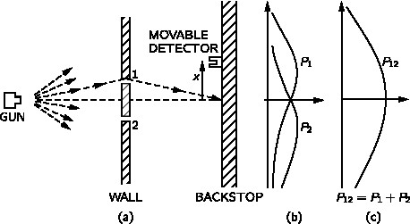
No interference is observed in this experiment!
2.2.3 Experiment 2: An experiment with waves
Let’s consider the same setup, but instead of a gun shooting bullets, let’s now consider a wave source, such as water waves, and a screen which measures the “intensity” of the wave motion. Concentric wavefronts propagate from a point source and hit the two slits, which we can then consider as point-like sources of secondary waves (using Huygen’s principle, which you should remember from the course on Waves). The setup is illustrated in (Figure 2.2).
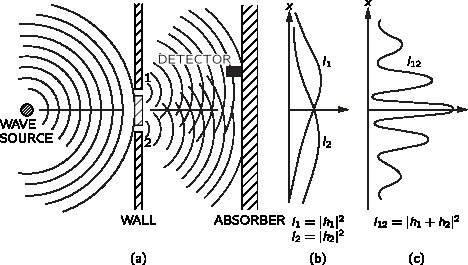
What we observe is that if we cover one of the two slits, we have the intensity bell curves indicated with \(I_1\) or \(I_2\) in Figure 2.2. However, if both slits are open, the waves interfere and form a pattern with maxima and minima of intensity, corresponding to positions where they interfere constructively and destructively, respectively.
In contrast to the previous experiment with bullets, where the total probability as a function of space was the sum of the two probability distributions, here the intensity observed is not simply the sum of the two intensities obtained when one of the slits is closed: \(I_{12}\neq I_1 + I_2\).
The key point here is that we cannot simply consider a sum of intensities, we need to consider the waves amplitudes: the intensity is in fact proportional the modulus square of the amplitude. This means that, if the amplitudes of the secondary waves coming from slits 1 and 2 are respectively \(h_1\) and \(h_2\), the corresponding intensities with only one slit open are \(I_1 = |h_1|^2\) and \(I_2=|h_2|^2\) (see Figure 2.2). However, when both slits are open, the total intensity will be given by the square of the sum of the amplitudes: \[ I_{12} = |h_1+h_2|^2. \]
Interference is observed with waves!
2.2.4 Experiment 3: An experiment with electrons
What do we expect to observe in an experiment with electron guns that send one electron per time through two slits?
The set-up is similar to the one in the first experiment, except that now the gun is shooting electrons instead of bullets, and at the screen we have a detector of electron that “clicks” every time an electron hits it.
Since we are shooting electrons, one per time, we would expect something like the probability distribution in the first experiment with bullets…
…however, this is not what we observe (not always at least - we’ll get back to this soon).
What we observe is illustrated in Figure 2.3.
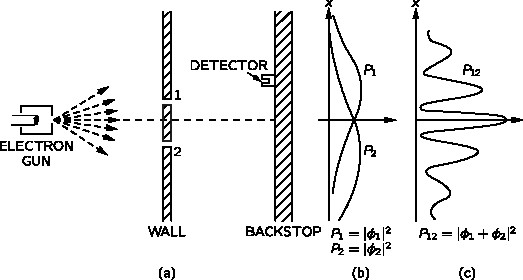
Do electrons split across the two slits?
Every “click” registered has always the same loudness - each electron detected is always a whole localised entity with its own mass and charge. No half electrons are detected, ever! This means that electrons do not split across the two slits.
So does this mean that each electron goes either through slit 1 or slit 2?
No, because if that was the case, the probability \(P_{12}\) would just be the same of \(P_1\) and \(P_2\), as with experiment 1. Instead, \(P_{12}\neq P_1+P_2\): there is interference!
So in the same experiment electrons behave like waves while in transit, before they get detected, but behave like particles upon detection.
After all, the same experiment can be done with light, and in that case we observe the same interference patter. In that case we can think of the interference of electromagnetic waves, in the light-as-wave description, but in the detection process light behaves as a particle, since it is detected by the photoelectric effect, which needs a (quantised) photons description to be explained (see previous chapter). Even sending one photon per time, the interference pattern is observed, so it is not a result of more photons interfering.
Ok, but maybe since electrons are charged they just interfere with each other and form that interference pattern?
No, actually the same pattern is observed also if you use neutrons, so it does not depend on the charge, it really depends on the nature of matter and how it manifests in different scenarios.
We can see where this is going: wave-matter duality. The interference pattern that we obtain in this experiment is analogous to the one we saw for intensity in experiment 2. In that case, we saw that the apparently complicated pattern of the intensity is actually very simple if we consider the sum of the wave amplitudes, which are physical and related to the oscillating electric and magnetic fields. But then, how do we explain this with electrons? We need to introduce a concept analogous to the classical wave amplitudes and to the classical waves, but for probabilities. So we come up with an analogous concept to describe the wave behaviour of matter: the wavefunction, introduced at the beginning of the chapter, playing the role of probability amplitude.
In this experiment we use the symbol \(\phi\) for the wavefunction, so the probability is \(P = \phi^*\phi = |\phi|^2\).
If an event - like the detection of a particle on the screen - can happen following different possible paths, we associate a wavefunction (or probability amplitude - a complex number) to each path. In this case, for two slits, we have two probability amplitudes \(\phi_1\) and \(\phi_2\) associated to each possible trajectory. The probabilities of detecting a particle at the screen, coming from slit 1 and slit 2 respectively (when one of the slits is closed), are therefore \(P_1=|\phi_1|^2\) and \(P_2=|\phi_2|^2\).
When both slits are open, the total probability of observing a particle at the screen is not the sum of these two probabilities. In analogy with the intensity for waves calculated from the square of amplitudes, the total probability is obtained from the modulus square of the total probability amplitude \(\phi_1+\phi_2\): \[ P_{12}=|\phi_1+\phi_2|^2=|\phi_1|^2+|\phi_2|^2+2|\phi_1||\phi_2|\cos\theta. \tag{2.1}\]
In this case we say that the electron is in a superposition state \(\phi=\phi_1+\phi_2\).
Note that the last term in Equation 2.1, \(2|\phi_1||\phi_2|\cos\theta\), is an interference term that makes the difference between this experiment and the classical case with no interference. \(\theta\) is the phase between the two complex wavefunctions \(\phi_1\) and \(\phi_2\).
The mathematics is exactly the same as the one that we have for classical waves once we introduce the concept of probability amplitude!
Interference is observed in this experiment with electrons (or neutrons)!
2.2.5 So is the electron a wave, a particle or both?
There are different interpretations about the wave-particle duality of matter, and maybe the most accepted answer to the above question is… neither (not at the same time at least!).
Electrons behave like waves on Mondays, Wednesday and Fridays, like particles on Tuesdays, Thursdays and Saturdays, and like nothing at all on Sundays.
– Readapted version of Sir Lawrence Bragg’s quote (originally for light).
Electrons (and other matter) can behave like either particles ot waves, depending on the kind of experiment performed on them, but never behave like both waves and particles simultanously.
This statement reflects Bohr’s concept of complementarity.
The ultimate origin of the difficulty lies in the fact (or philosophical principle) that we are compelled to use the words of common language when we wish to describe a phenomenon, not by logical or mathematical analysis, but by a picture appealing to the imagination. Common language has grown by everyday experience and can never surpass these limits. Classical physics has restricted itself to the use of concepts of this kind; by analyzing visible motions it has developed two ways of representing them by elementary processes: moving particles and waves. There is no other way of giving a pictorial description of motions — we have to apply it even in the region of atomic processes, where classical physics breaks down. Every process can be interpreted either in terms of corpuscles or in terms of waves, but on the other hand it is beyond our power to produce proof that it is actually corpuscles or waves with which we are dealing, for we cannot simultaneously determine all the other properties which are distinctive of a corpuscle or of a wave, as the case may be. We can therefore say that the wave and corpuscular descriptions are only to be regarded as complementary ways of viewing one and the same objective process, a process which only in definite limiting cases admits of complete pictorial interpretation.
– M. Born, Atomic Physics, fourth edition, New York, Hafner Publishing Co., 1946, p. 92.
2.2.6 Experiment 4: An experiment with electrons… but we monitor the electrons through the slits!
Strange things happen when we add a strong light source between the two slits (as in Figure 2.4), so when the electron passes through a slit, it scatters some light and we can know which one it went through by seeing which aperture the “flash” comes from.
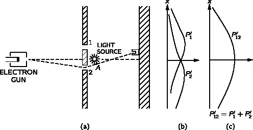
What do we observe once we start shooting electrons? Every time we hear a “click” (we detect an electron at the screen), we also see a flash, either coming from slit 1 or slit 2. However, we never observe two flashes coming from both slits!
So were we wrong when in the previous experiment we said that electrons do not go through either slit 1 or slit 2? Not really, because if we keep shooting electrons, we see something unexpected: the interference now disappears! We obtain the same result as in experiment 1 with bullets. However, if the light close to the slits is turned off, the interference patter of experiment 3 is restored… What is going on here?
Something happens when we look at the electrons, their distribution changes, so their motion seems to be affected by the interaction with the light source used to “see” the electrons going through the slits. Indeed, the bright light source disturbs the electrons, “localising” them.
What if we try to use a less bright source, so that the electrons are less disturbed?
We can in fact make light dimmer, however the flashes of light observed will not get weaker, what changes is their frequency. With dim enough light, not all “clicks” will be preceded by a flash. In fact, reducing the intensity of the light source will not change the size of the photons, only their quantity, hence the rate at which they are emitted (remember the simulation on the photoelectric effect in the previous chapter). This explains why some electrons can go through a slit without scattering light at times, because at times there is no photon around while the electron travels! Let’s keep running this experiment with dim light anyway and let’s build two different histograms of the detections to reconstruct the probability distribution for the two different cases: when we see the flash and when we do not see the flash. If we keep the count of the detections where a flash is observed, we obtain the total distribution \(P'_{12}\), without interference, of Figure 2.4. However, for the counts of detections for which a flash was not observed, we obtain again the interference pattern \(P_{12}\) of Figure 2.3! We can confirm that if electrons are not seen, we have interference!
What if we use a light with a lower frequency?
The kick given to the electrons by light depends on the momentum of the photons, \(p=h/\lambda\), so if we want to decrease this, we should increase the wavelength using light at lower frequencies (e.g. infrared or radio), not lower intensities! If we try the experiment with increasingly lower frequencies, nothing seems to change, until we eventually try with light of wavelength comparable to the distance between the slits. Maybe you can guess what happens here though… if the wavelength is comparable to or longer than the distance between the slits, then we can’t distinguish these as two separate spots! So what we see in this case is just a big fuzzy flash, but we would not be able to tell whether it comes from slit 1 or slit 2, so we can’t tell which slit the electron went through. For such wavelengths then we start seeing again the interference pattern of Figure 2.3.
This phenomenon is actually a consequence of the uncertainty principle, which will see in the rest of the chapter, and for which we can give this alternative statement: it is impossible to design an experiment to determine through which slit the electron passes without destroying the interference pattern by disturbing the electron.
2.3 Wavefunctions and Born’s probability interpretation
We introduce the concept of wavefunctions to describe the wave property of matter in analogy to light.
Wavefunctions, used to describe matter waves, are quite different from waves like water, sound or electromagnetic waves: they are not measurable quantities, they are represented by complex numbers, so they do not directly define probabilities, but probability amplitudes that are used to find probabilities. To have physically “meaningful” measurable quantities, we need to obtain real values, so we use the modulus square of wavefunctions (or probability amplitudes) to obtain the probabilities.
For a one-dimensional wavefunction \(\Psi(x,t)\), the probability density of finding a particle in an infinitesimal region between \(x\) and \(x+dx\) is \[ P(x,t)dx=|\Psi(x,t)|^2 dx = \Psi(x,t)^*\Psi(x,t) dx. \tag{2.2}\]
The probability of finding the particle in a finite region \(a\leq x \leq b\) is \[ P(x,t) = \int_a^b |\Psi(x,t)|^2 dx. \tag{2.3}\]
Since the particle must be somewhere along the \(x-\)axis where the wavefunction is defined, the total probability of finding the particle in that region must be equal to \(1\): \[ \int_{-\infty}^{\infty}|\Psi(x,t)|^2 dx = 1. \tag{2.4}\]
This is the normalization condition that we always need to make sure is satisfied by a wavefunction:
If you consider the wavefunction at a fixed time \(T\), the probability of finding the particle in a certain interval along \(x\) is given by the area under the curve described by \(|\Psi(x,T)|^2\).
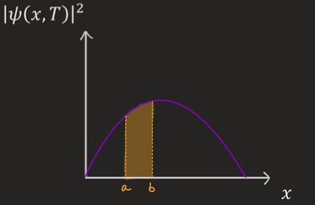
Because of the relation between the wavefunction and the probability, it is important to stress that a wavefunction \(\Psi(x,t)\), function of \(x\) and \(t\), must be:
- single-valued (i.e. for each value of \(x\) and \(t\) there is only one corresponding value of \(\Psi\))
- continuous (i.e. you could “draw” it without lifting your pen from the paper)
- smooth (i.e. no sudden changes in the derivative - continuous derivative)
- normalized (see Equation 2.4)
We will see later more in detail why these conditions are required, but they will be important for the rest of the course, so remember them!
2.3.1 Exercise
The initial wavefunction of a particle is \(\Psi(x,0)=A e^{-x^2/4}\).
- Find the value of the coefficient \(A\).
- Sketch the probability of finding the particle against \(x\).
- What is the probability of finding the particle in the interval \([-x_0,x_0]\)?
- What properties must the wavefunction satisfy?
- It may be convenient to use the symmetry of the wavefunction.
Solution
You need to impose the normalization condition for the probability (i.e. the integral of the probability over the whole space must be 1): \[ \int_{-\infty}^{\infty} |\Psi(x,0)|^2 dx = |A|^2 \int_{-\infty}^{\infty} e^{x^2/2} dx = |A|^2 \sqrt{2\pi}=1, \] which gives \(A=(2\pi)^{-1/4}\).
The probability against \(x\) is given by the plot below:
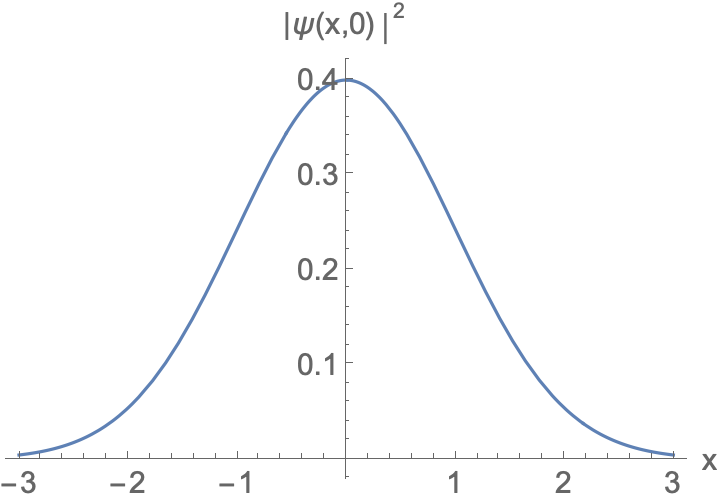
2.4 The wave formalism for free particles
This part is based on the second chapter of Feynman’s lectures.
We saw that the de Broglie wavelength (Equation 1.26) implies that a particle with a momentum \(p\), like an electron, has to have an associated wavelength \(\lambda\): \(p=h/\lambda\).
So how do we represent this matter wave having this wavelength?
2.4.1 Free particle as plane wave?
The most simple thing to describe a wave with a given wavelength is to consider a traveling plane wave.
From the Planck equation Equation 1.14 we can write the energy in the form \[ E = h\nu = \hbar\omega. \]
Note that in the next section, for simplicity of visualization, we will be using the real part of the plane wave \[ \Psi(x,t)=A\cos(kx-\omega t), \tag{2.6}\] but we will get back to using Equation 2.5 later on. Considering complex wavefunctions in quantum mechanics is fundamental due to the probabilistic nature of quantum physics. While in classical mechanics the complex part of waves is “physical”, in quantum mechanics wavefunctions are intrinsically complex because they are used to define the probability and introduce phase factors that are not directly measurable, but have measurable consequences such as the interference in the double-slit experiment.
2.4.1.1 Dispersion relations
From Equation 2.5 we see that the frequency \(\omega\) depends on the wavenumber \(k\). The functions relating the time-dependence and space-dependence of physical entities, with either \(\omega(k)\) or \(E(p)\), is given by the dispersion relations.
Dispersion relation for non-dispersive systems For non-dispersive systems, the dispersion relation is linear \[ \omega(k)=vk, \tag{2.7}\] where \(v\) is the wave speed.
Dispersion relation for light
The dispersion relation for light (in vacuum) is also a linear function: \[ c=\lambda \nu = \omega/k = E/p \implies \omega(k)=ck. \tag{2.8}\]
Dispersion relation for a non-relativistic particle
For a non-relativistic particle, using Equation 1.26, we can derive the relation between the momentum and the wavenumber: \[ p=\hbar k, \] and combining this with the definition of kinetic energy and the Planck equation \[ E = \frac{p^2}{2m}=\frac{\hbar^2k^2}{2m} = \hbar\omega, \] we get the (quadratic) dispersion relation for a Newtonian (non-relativistic) particle \[ \omega(k) = \frac{\hbar k^2}{2m}. \tag{2.9}\]
Dispersion relation for a relativistic particle
For a relativistic particle, the energy is \[ E=\sqrt{p^2c^2+m^2c^4}-mc^2. \] For \(p\ll mc\), this reduces to
#### Plane waves derivatives
The space and time derivatives of plane waves are \[ -i\hbar\frac{\partial \Psi}{\partial x} = \hbar k \Psi = p \Psi, \] \[ i\hbar \frac{\partial \Psi}{\partial t} = \hbar \omega(k) \Psi = E \Psi. \]
2.4.1.2 Issues with free particles as plane waves
If the plane wave describes the wavefunction for a free particle, it means that since this must be continuous and extending to infinity with the same amplitude, we could find the particle everywhere in space with the same probability (\(|\Psi(x,t)|^2=A^2\)), which does not seem right. In fact, if we consider the uncertainty on the position of the particle, \(\Delta x\), as being (roughly) the region across which the wavepacket extends, we can see (Figure 2.6 (a)) that this is a big uncertainty - so big that it goes to infinity! The plane wave has the same intensity everywhere and it is fully delocalised.
There is another issue… Let’s try to impose the normalisation condition considering a fixed time, e.g. \(t=0\) for simplicity: \[ \int_{-\infty}^{\infty}|\Psi(x,t)|^2 dx = |A|^2 \int_{-\infty}^{\infty} \cos^2 (kx) dx \to |A|^2 \times \infty. \]
In theory this should be equal to \(1\) in order to be normalised, but we see that there is a problem: this integral does not converge, so this wavefunction can’t be normalised. This means that we can’t describe the free particle simply as a plane wave because it would be unphysical.
It seems that having one single wavelength (or wavenumber, or momentum value), does not really do the job. What we would need is something to make this wave more “localised” in space. Remember however that the wavefunction still needs to extend across the whole space, from \(-\infty\) to \(\infty\), but naturally go to \(0\) beyond a certain range where we expect to find the particle (remember that the wavefunction has to be also smooth, continuous and single-valued). How do we obtain something that has zero amplitude somewhere and is contained in a wavepacket of length \(\Delta x\), like the one shown in Figure 2.6 (b)?
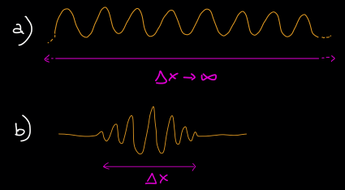
As Feynman says: let’s add more waves!
2.4.2 Superposition of two plane waves
Let’s try to add more waves having different wavelengths (corresponding to more values of momentum based on the de Broglie wavelength).
Let’s start by adding two waves of different wavelengths. What do we obtain? Look at the example below that considers this, showing two waves and the resulting one obtained using the superposition principle.
Go to this link if the resource embedded below does not work.
The resultant wave is now made of “beats”, resulting in “wave groups” with smaller extension due to constructive and destructive interference. We’re still not in the ideal case of having one localised wavepacket, but it seems that adding more waves (and more momenta) helps and reduces the uncertainty of the position. It is worth noting that by adding two waves of different wavelengths, because of the de Broglie wavelength, we have two possible values of momentum that we could observe, which means that we increased the uncertainty of momentum, and this leads to a reduced uncertainty of the position. This is not a case, and we will make more clarity on this by the end of the chapter.
We also see that adding two waves with the same amplitude and different wavenumbers, we obtain a series of wave “envelopes” travelling at a group velocity that is different from the velocity of the individual waves. This will be clarified in the following.
Let’s see how mathematically we get these “envelopes” by considering the sum of (the real part of) two plane waves with equal amplitude \(A\), different wavenumbers \(k_1\) and \(k_2=k_1+\Delta x\) and different frequencies \(\omega_1\) and \(\omega_2=\omega_1+\Delta\omega\): \[ \Psi(x,t) = \Psi_1(x,t) + \Psi_2(x,t) = A [\cos(k_1 x - \omega_1 t) + \cos(k_2 x - \omega_2 t)]. \tag{2.10}\] Using the trigonometric identity \(\cos a+\cos b=2\cos\left( {\frac{1}{2}(a-b)}\right) \cos\left({\frac{1}{2}(a+b)}\right)\), from Equation 2.10 we obtain \[ \Psi(x,t)=2\cos\left[\frac{1}{2}(\Delta k x-\Delta \omega t)\right]\cos\left[\frac{1}{2}(2k+\Delta k)x-\frac{1}{2}(2\omega+\Delta\omega)t\right], \tag{2.11}\] and since \(\Delta k \ll k\) and \(\Delta\omega \ll \omega\), the last cosine term in Equation 2.11, describing the wave within the envelope is \(\cos\left[\frac{1}{2}(2k+\Delta k)x-\frac{1}{2}(2\omega+\Delta\omega)t\right]\approx \cos[kx-\omega t]\). Therefore the total wavefunction is \[ \Psi(x,t)=\Psi_1(x,t) + \Psi_2(x,t) =2\cos\left[\frac{1}{2}(\Delta k x-\Delta \omega t)\right]\cos[kx-\omega t], \tag{2.12}\] giving the envelope illustrated in Figure 2.7 for \(t=0\).
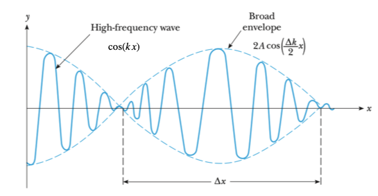
2.4.2.1 Phase and group velocities
The wave within the envelope moves at the phase velocity given by the term \(\cos[kx-\omega t]\) \[ v_p=\frac{(2\omega+\Delta\omega)/2}{(2 k+\Delta k)/2}\approx \frac{\omega}{k} = \frac{\omega(k)}{k}. \tag{2.13}\]
The other cosine term in Equation 2.12 gives the velocity of the whole envelope, also known as group velocity \[ v_g = \frac{\Delta \omega/2}{\Delta k/2}=\frac{\Delta\omega}{\Delta k}. \tag{2.14}\] In the following section we will see a more accurate form of the velocity group, obtained in the limits for \(\Delta\omega \to 0, \Delta k\to 0\).
2.4.3 Adding more waves to form a wavepacket
So how do we create a single localised wavepacket and reduce the surrounding noise?
- Add more waves of different frequencies (more values of momentum/wavenumber)
- Choose conveniently the distribution of the amplitudes of each wave component.
Play with the simulator below: try to find ways to have further wavepackets with small noise between them.
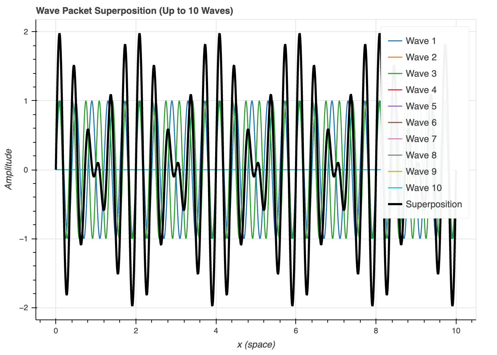
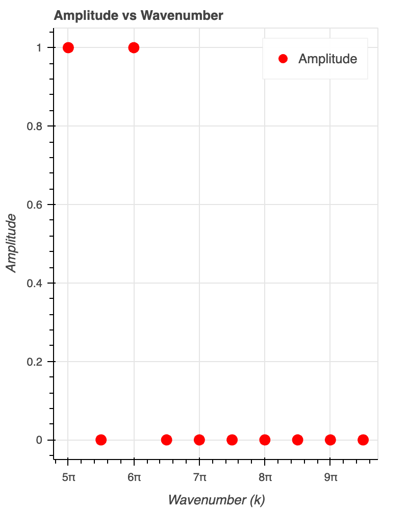
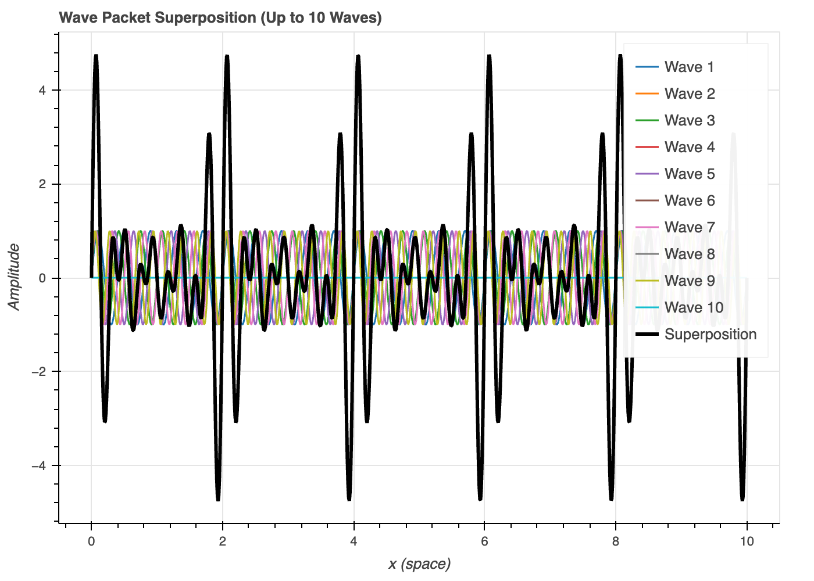
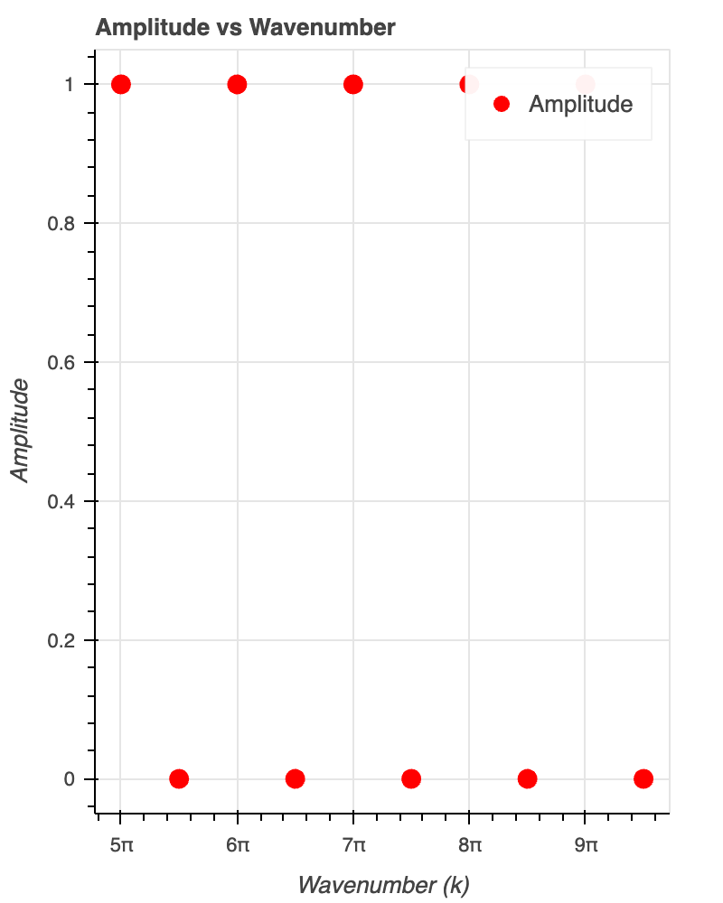
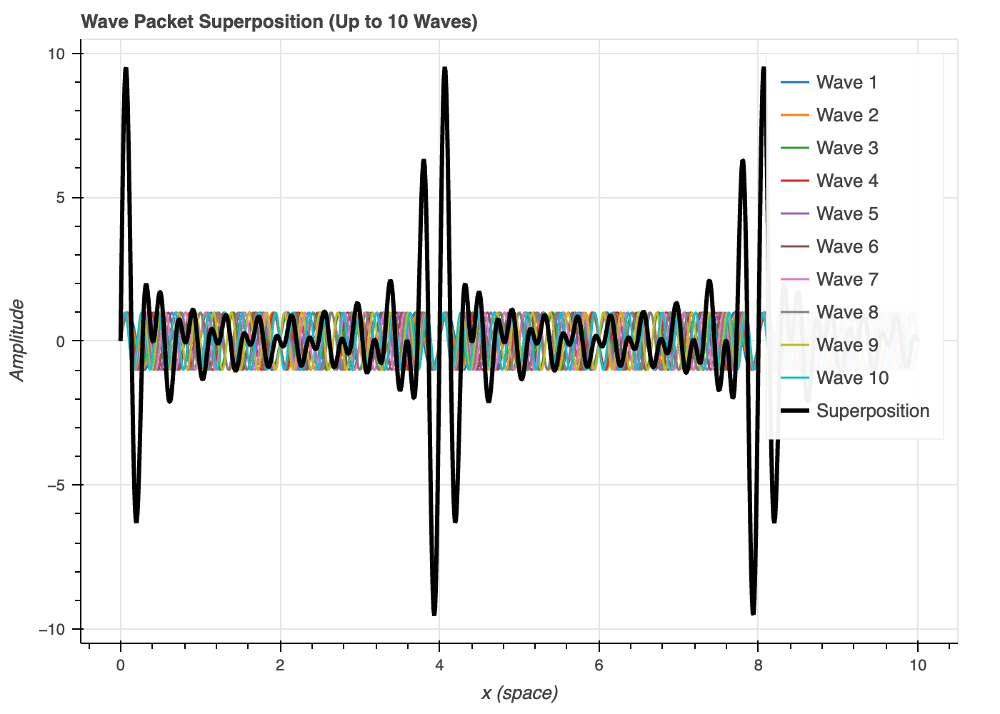
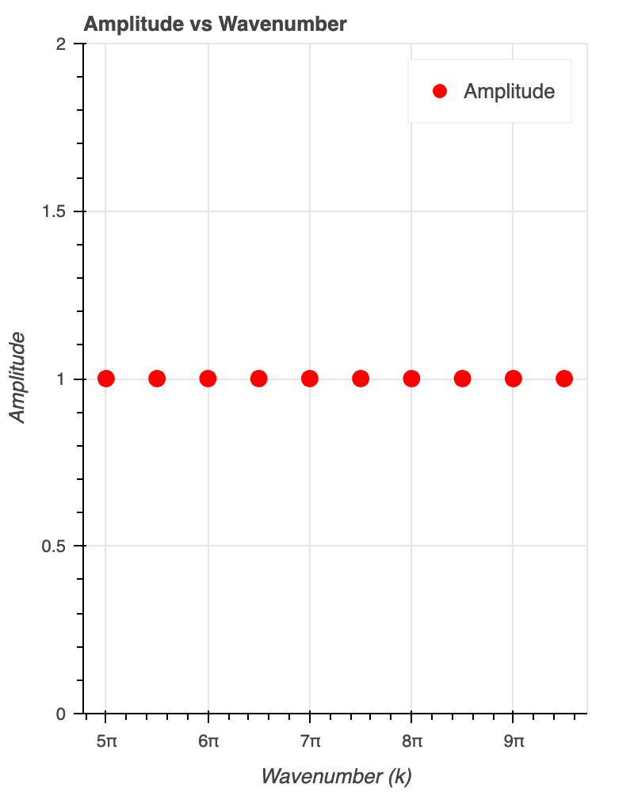
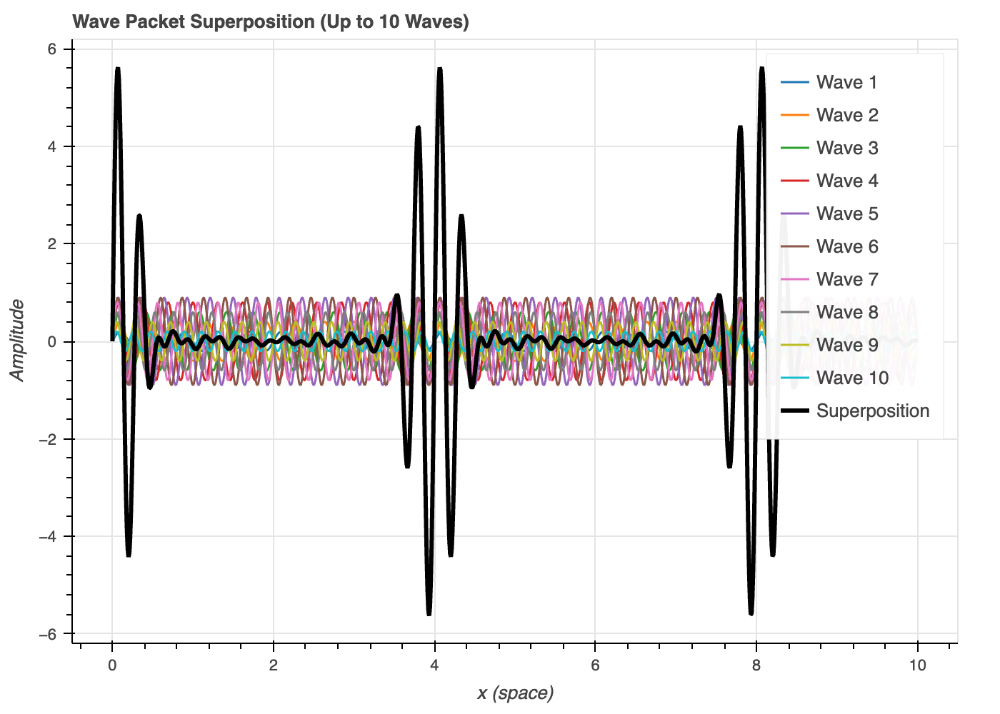
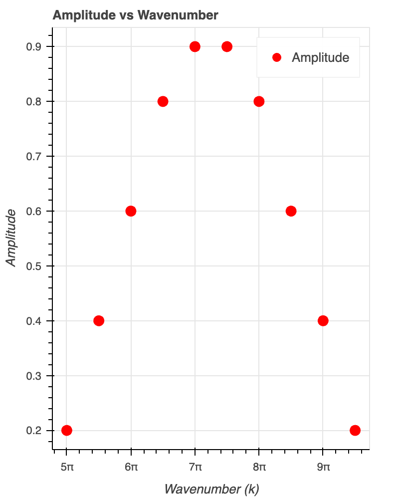
In the above figures we kept increasing the number of modes (waves at different wavenumbers) and see that adding more waves increases the wavepackets, while changing their weights in the sum (by changing their amplitudes) reduces the noise between wavepackets.
Now, you get the idea. We can keep increasing the number of waves to eventually isolate a wavepacket. The more we add, the better, so let’s add up a continuum of waves in the \(k\)-space (the space of the wavenumbers), with amplitudes dependent on \(k\), obtaining the integral below.
The broader the function \(\phi(k)\), the narrower is the wavepacket \(\Psi(x,0)\), satisfying \(\Delta k \Delta x\approx 1\) if \(\phi(k)\) and \(\Psi(x)\) are Gaussians of widths \(\Delta k\) and \(\Delta x\) respectively. This is not a coincidence, as position and wavenumber (or momentum) are conjugate variables, so increasing one will decrease the other. We will expand on this at the end of the chapter.
Note that at the time \(t=0\), Equation 2.15 gives \[ \Psi(x,0)=\frac{1}{\sqrt{2\pi}}\int_{-\infty}^{\infty} \phi(k)e^{ikx}dk. \tag{2.16}\]
2.4.4 Wavepacket dispersion
We have seen that the velocity of each wave (or phase velocity) is, from Equation 2.13, \(v_p=\frac{\omega(k)}{k}\).
The whole wavepacket however moves at the group velocity, which for the localised wavepacket of Equation 2.15 can be obtained from Equation 2.14 in the limit \(\Delta k\to 0, \Delta\omega \to 0\): \[ v_g = \frac{d\omega(k)}{d k}. \tag{2.17}\]
For the wavepacket to travel without dispersion (i.e. no distorsion), the phase and group velocities must be equal: \(v_p=v_g\).
For a non-dispersive medium the dissipation relation Equation 2.7 gives a constant phase velocity equal to the group velocity: \(v_p=v=v_g\) and the wavepacket doesn’t disperse.
However, for a dispersive medium with \(\omega(k)\propto k^2\) as in Equation 2.9, we would obtain \(v_p=\frac{\hbar k}{2m}\), so the components of waves with smaller wavenumbers would move more slowly. In this case the group velocity would be \[ v_g = \frac{d\omega(k)}{d k}\bigg|_{k=k_0}=\frac{\hbar k_0}{m}=\frac{p_0}{m}, \tag{2.18}\]
We can see that the group velocity coincides with that of a particle of mass \(m\) and momentum \(p_0\), for a wavepacket centered around \(k=k_0\) in \(k\)-space.
Since this is made from a superposition of waves moving at different speeds, we can expect that the wavepacket becomes distorted with time, as the group and the phase velocities are not equal: \(v_p\neq v_g\) and the wavepacket is dispersive.
2.4.5 Conservation of probability
Going back to the definition of the wavepacket of Equation 2.15, having seen that this is the FT of the wavefunction in the \(k\)-space, we can use the Parseval identity to relate the probabilities in position-space and k-space: \[ \int_{-\infty}^{\infty}|\Psi(x)|^2dx = \int_{-\infty}^{\infty}|\phi(k)|^2dk. \tag{2.19}\] From this you can notice that the wavefunction must be normalised also in \(k\)-space. We can give to \(|\phi(k)|^2\) the same meaning of probability in the \(k\)-space that we gave to \(|\Psi(x)|^2\) in position space.
Starting from the total probability in position space \(\int dx|\Psi(x,t)|^2\), we can demonstrate that the normalization in the wavenumber (or momentum) \(k\)-space is preserved even if we have time evolution: \[ \int \Psi^*(x,t)\Psi(x,t)dx=\frac{1}{2\pi}\int dx \int dk \phi^*(k)e^{-i(k x-\omega(k)t)} \int dk' \phi(k')e^{i(k' x-\omega(k')t)}, \tag{2.20}\]
and using the definition and property of the Dirac delta function \[ \frac{1}{2\pi}\int_{-\infty}^{\infty}dx e^{-i(k-k')x} = \delta(k-k') \tag{2.21}\] \[ \int f(x)\delta(x-x_0)dx=f(x_0), \tag{2.22}\]
Equation 2.20 gives
\[ \int |\Psi(x,t)|^2 dx=\int dk \int dk' \delta(k-k')e^{i(\omega(k)-\omega(k'))t}\phi^*(k)\phi(k')=\int dk |\phi(k)|^2=1. \tag{2.23}\]
Note that the probability of finding the particle at a certain value of \(k\), \(|\phi(k)|^2\), is not changing with time: the evolution of each definite-\(k\) (or definite-\(\omega\)) is just a phase \(e^{i\omega(k)t}\) that cancels out using the Dirac delta properties.
2.5 Reciprocity in wavepackets and the Heisenberg uncertainty principle
We will now go more in details in concept that we anticipated in the previous few sections, and will see how the wave formalism that we introduced, with the FTs, leads to the Heisenberg’s uncertainty principle.
To construct the wavepacket for a free particle, the first thing we tried was to use a single plane wave, but we saw that it had an ill-defined position, extending to infinity, i.e. \(\Delta x\to \infty\). We then mentioned that the position and the wavenumber (and so the momentum too) are conjugate variables through the Fourier transform: if you increase one, the other one will decrease. Now we have introduced enough mathematical notation to see that with the FT properties: if we Fourier-transform a single-frequency plane wave, we obtain the Dirac delta-function of Equation 2.21.
The same goes, in theory, if we consider a plane wave in \(k\)-space: we will have a Dirac delta in position space (extremely localised).
However, once we start adding more components in \(k\)-space (or position space), we narrow down the localisation in the complementary position (or wavenumber/momentum) space, as shown in Figure 2.16.
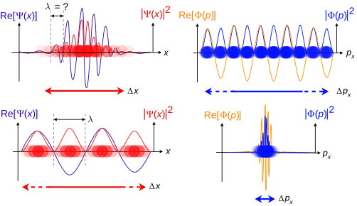
{kind=link}
So how do we get a good trade-off between localisation in position and momentum space, minimizing both uncertainties \(\Delta x\) and \(\Delta k\) (or \(\Delta p\))?
Remember the simulation and the outputs of Figure 2.14, where we found that adding more components with different wavenumbers and a certain distribution of amplitudes \(\phi(k)\) gives more distinct and “clean” wave groups.
It turns out that when we go to the continuum to build the localised wavepacket from the FT of plane waves in momentum space, the best function of \(\phi(k)\) that can be used to obtain a good wavepacket that minimizes uncertainty in both position and momentum space is a Gaussian!
2.5.1 Gaussian wavepackets
Let’s consider the following Gaussian wavepacket with a standard deviation \(\sigma(k) = 1/\sqrt{4\alpha}\) centered about \(k=k_0\) in momentum space:
\[ \phi(k)\sim e^{-\alpha(k-k_0)^2}. \tag{2.24}\]
Why a Gaussian?
The FT of a Gaussian is still a Gaussian!
From Equation 2.15, using the Gaussian amplitude distribution of Equation 2.24: \[ \Psi(x)=\frac{1}{\sqrt{2\pi}}\int dk e^{-\alpha(k-k_0)^2}e^{ikx}, \] and defining \(K=k-k_0\) this gives \[ \Psi(x)=\frac{e^{ik_0x}}{\sqrt{2\pi}}\int dK e^{-\alpha(K^2-iKx/\alpha)}. \] Using the trick of “completing the square”, the above equation becomes \[ \Psi(x)=\frac{e^{ik_0x}}{\sqrt{2\pi}}\int dK e^{-\alpha(K-iKx/2\alpha)^2}e^{-x^2/4\alpha}. \] After another change of variables \(K'=K-ix/2\alpha\): \[ \Psi(x)=\frac{e^{ik_0x}e^{-x^2/4\alpha}}{\sqrt{2\pi}}\int dK' e^{-\alpha K'^2}=\frac{e^{ik_0x}e^{-x^2/4\alpha}}{\sqrt{2\alpha}}, \tag{2.25}\] where in the last passage we used the Gaussian integral \(\int_{-\infty}^{\infty} dz e^{-\alpha z^2} =\sqrt{\frac{\pi}{\alpha}}\).
Note that the exponential term with the central momentum \(k_0\) is just a phase factor, since all the \(k\) are integrated.
The resulting Gaussian of Equation 2.25 has a standard deviation \(\sigma(x) = \sqrt{\alpha}\).
The product of the widhts of the two Gaussian in \(k\)-space and \(x\)-space is therefore a constant independent of \(\alpha\), showing that the relation is reciprocal:
\[ \sigma(x)\sigma(k)=\sqrt{\alpha}\frac{1}{\sqrt{4\alpha}}=\frac{1}{2}. \tag{2.26}\]
If we associate the uncertainty on position and momentum to the above standard deviations, i.e. \(\sigma(x)\to \Delta x\) and \(\sigma(k)\to \Delta k\), and use the wavenumber definition \(k=p/\hbar\), Equation 2.26 becomes \[ \Delta x \Delta p=\frac{\hbar}{2}. \tag{2.27}\]
Now, this is something that looks like the well known Heisenberg’s uncertainty principle, except for the fact that it is an equality! In fact, earlier on we mentioned that using Gaussian for the amplitude functions (either in position or momentum space) gives the minimum uncertainty in position and momentum, i.e. the equality of Equation 2.27.
If we use any other function, we would get less precision on the uncertainties, which are related by the Heisenberg uncertainty below.
In the next section we will focus on the physical meaning and interpretation of the Heisenberg uncertainty principle.
2.5.2 Heisenberg’s uncertainty principle - implications
The Heisenberg’s uncertainty relation is central in quantum mechanics and explains things such as the breakdown of the double slit on observation, or the natural spectral linewidths, through Equation 2.29. It was originally derived by Heisenberg in his matrix mechanics formalism and we shall see it again in the context of operator algebra. In some textbooks/sources you may find \(\hbar\) instead of \(\hbar/2\): the factor of 2 is not deeply meaningful, the Planck constant is.
Qualitatively, the effects are profound: it tells us that if position is constrained then momentum must become uncertain and vice versa, and the general scaling relationship between the two. Many thought experiments can be constructed around attempts to circumvent this limit, always failing due to some consequence of the variables’ conjugacy.
- It is also responsible for avoiding the in-spiral and collapse of the Bohr atom: as an electron falls in and becomes localised near the nucleus at \(r = 0\), its root-mean-square momentum increases, and hence so does its kinetic energy: the ground state of minimum energy is not located at \(r = 0\), but instead at a finite distance and electrostatic potential.
- The Hesenberg’s uncertainty principle is also central in the natural spectral linewidths, which arises from Equation 2.29.
2.5.2.1 Uncertainties in the double-slit experiment
The Heisenberg uncertainty relation also explains why the interference pattern disappears in the double-slit experiment, if we observe the path of individual particles. This is in short because the observation of the position (which reduces the uncertainty \(\Delta x\)) will increase the uncertainty in the momentum sufficient to destroy the interference pattern. Let’s see this a bit more in detail.
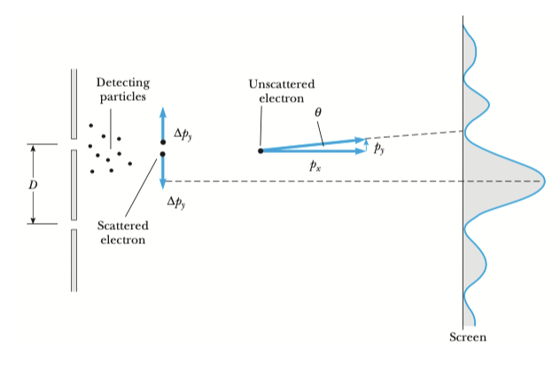
In order to understand which slit the particle goes through, we place some particles right behind the slits, as shown in Figure 2.17, to use the recoil of small particles to have information on the path taken by electrons. Too see which slit each electron goes through, we must have an uncertainty on the detecting particle’s position \[ \Delta y\ll D. \tag{2.30}\] Also, during the collision, the detecting particle changes its momentum of a quantity \(\Delta p_y\), equal and opposite to the electron’s change in momentum. If the electron is not deviated by an observation, it hits the screen producing the interference pattern having a first minimum given by (see Figure 2.17) \[ \tan\theta \approx \theta =\frac{p_y}{p_x}=\frac{h}{2p_x D}. \]
In order to preserve the interference pattern we should therefore have \[ \frac{\Delta p_y}{p_x}\ll \theta = \frac{h}{2p_x D}\implies \Delta p_y\ll \frac{h}{2D} \] both for the electron and the detecting particle (since their change in momentum is the same). Therefore, from Equation 2.30 we would obtain \[ \Delta p_y \Delta y \ll \frac{h}{2D}D=\frac{h}{2}, \]
which clearly violates the Heisenberg uncertainty principle Equation 2.28! In fact, any possible experiment we can imagine aimed at determining which slit the electron goes through, would give an uncertainty in momentum that is too big to still obtain the interference pattern.
2.5.2.2 Uncertainties in the harmonic oscillator
This will be more clear when we do the quantum harmonic oscillator, but for now we can anticipate that the ground state (state of minimum energy) of the quantum harmonic oscillator has non-zero energy, and this is due to the Heisenberg’s uncertainty principle.
The (classical) harmonic oscillator is given by the following energy: \[ E = T+V = \frac{p^2}{2m}+\frac{1}{2}m\omega^2 x^2, \]
where the first term is the kinetic energy and the quadratic term is the potential energy.
Qualitatively: since the potential is harmonic, if the particle was exactly at the bottom of the potential with zero uncertainty, paradoxically the kinetic term related to the momentum would have to go to infinity because of the uncertainty principle.
For a quantitative description, we will come back to this after doing the quantum harmonic oscillator.
2.6 Summary
Matter and light exhibit both wave-like and particle-like properties, depending on the experimental conditions (e.g., electrons in the double-slit experiment).
The wavefunction \(\Psi(x,t)\) is a complex function describing the quantum state of a particle, and the probability density of finding the particle at the position \(x\) at time \(t\) is proportional to \(|\Psi(x,t)|^2\).
Quantum states can exist in a superposition, where the total probability amplitude is the sum of individual amplitudes (e.g., \(\Psi=\Psi_1+\Psi_2\) in the double-slit experiment).
A single plane wave is not physically realistic to describe a free particle as this would be infinitely delocalised; we need to add an infinite number of weighted plane waves to form a wavepacket localised in space, obtaining the FT of a wavefunction in momentum space.
There is a fundamental limit to how precisely two conjugate variables \(A\) and \(B\) (e.g. momentum and position) can be measured simultaneously: \(\Delta A \Delta B \geq \frac{\hbar}{2}\), i.e. when one is wide, the other is narrow.